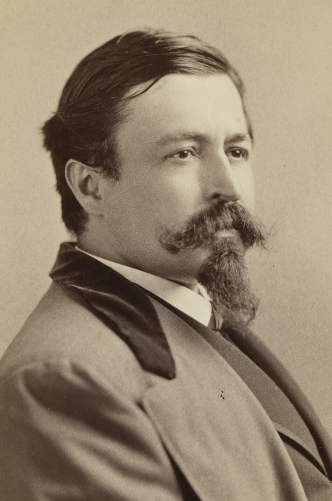

Directions: Fill in the chart as the retreat takes shape step by step. Keep this page in your notebook. You will use it again on the review day before the unit test.

| Piece of the story | What happened | Who gained or lost | The evidence |
|---|---|---|---|
| Amnesty and the revolt | |||
| The Court's first reading | |||
| Panic and the House | |||
| The League by daylight | |||
| The last civil rights act | |||
| Two cartoons and 1876 |
The retreat in one sentence. Finish this sentence in your own words, using at least two rows of the chart as evidence. By 1876 the settlement had not been repealed, but...
| Piece of the story | What happened | Who gained or lost | The evidence |
|---|---|---|---|
| Amnesty and the revolt | The Amnesty Act of May 1872 removed the disability from nearly all former Confederates. The Liberal Republicans nominated Greeley on amnesty and an end to federal protection; Grant won, and retreat gained respectability. | Gained: the old leadership class, eligibility restored; carried north: the idea that ending protection was reform | Removal otherwise required a two thirds vote of Congress in each case. |
| The Court's first reading | The Slaughter-House Cases, April 1873, decided 5 to 4, held that the Fourteenth Amendment protected only the narrow rights of national citizenship and left the great body of civil rights under state authority. | Lost: freedpeople and their advocates, the federal court road; left standing: state governments as the ordinary guardians of civil rights | Miller conceded the amendments were written for the freedom of the African race before narrowing their reach. |
| Panic and the House | Jay Cooke's house failed in September 1873, the depression ran six years, and the elections of 1874 gave the House to the Democrats for the first time since before the war. | Lost: the settlement, its funding and the North's attention; gained: the white South's party, the House | Protection had always depended on northern willingness to pay its costs in money, troops, and attention. |
| The League by daylight | The White League, formed in Louisiana in 1874, pledged itself in print to a white man's government, murdered Republican officeholders at Coushatta, and fought at Liberty Place in New Orleans until federal troops restored the governor. | Lost: Republican officeholders and voters in Louisiana; compounded: northern weariness at each rescue | The League organized openly among merchants, planters, and former officers, where the Klan had ridden disguised. |
| The last civil rights act | The Civil Rights Act of 1875, Sumner's cause, defended by Charles Hays, guaranteed equal enjoyment of inns, public conveyances, and theaters and barred racial exclusion from juries. | Raised on paper: all citizens; unenforced in practice: the same citizens, in its own decade | Section 2 set a five hundred dollar forfeit to the person aggrieved, plus a misdemeanor fine or imprisonment. |
| Two cartoons and 1876 | Nast's Worse Than Slavery named the League and the Klan as partners in October 1874, while his Colored Rule that March carried the era's caricature of Black legislators. | Pictured clearly: the counterrevolution; pictured only partly: the Black officeholders the settlement had seated | Colored Rule is taught from its published description and transcribed captions; the drawing is not reproduced in this lesson. |
The retreat in one sentence. Strong answers complete the sentence with the mechanism. By 1876 the settlement had not been repealed, but the Court had narrowed the amendments, the depression and the elections of 1874 had withdrawn the North's money and attention, the League had shown daylight violence could move a state government, and the last civil rights act stood largely unenforced: the settlement survived as text while its enforcement stood down.